Destructible Troubleshooting Guide
Contents
- 1 About This Guide
- 2 Recommendations & Tips
-
3
Frequently Asked Questions
-
3.1
Windows/OSX/Linux/Console
- 3.1.1 Why is there a hole/missing face in my DM?
- 3.1.2 Why does my mesh fall completely apart when I shoot it? Why can’t I just shoot a hole in my DM? How to stop DM from breaking apart in a single hit?
- 3.1.3 Why doesn’t my DM stick to the ground when I shoot it? It just flys off and bounces around.
- 3.1.4 Why is my DM floating above the ground, or why is collision not matching the mesh? Why doesn’t the collision of my DM match my Static Mesh where I setup my collision?
- 3.1.5 Why doesn’t my mesh break when it falls?
- 3.1.6 Why is my collision wrong if I scale my DM?
- 3.1.7 Why does my projectile mesh not fracture my DM? My bullet (mesh) doesn’t fracture the destructible. What’s wrong?
- 3.1.8 When I fracture my mesh why is there not material applied to the chunks on the inside?
- 3.1.9 How do I setup my DM so that it can receive different damage from different weapons and not fracture? How to not receive damage if below a certain amount?
- 3.1.10 Why are some settings not honored when I simulate Physics on my Destructible?
- 3.1.11 Why doesn’t my DM cast shadows?
- 3.1.12 My character is always blocked by the chunks. How can I turn off collision for the DMs or my character?
- 3.1.13 How do I customize the shapes of the chunks in my DM?
- 3.1.14 How do I create more than one destruction depth?
- 3.1.15 Can I change my Destructible meshes settings at run-time?
- 3.1.16 Can I fracture a mesh at run-time, like fruit ninja?
- 3.1.17 When using Debris settings all my chunks disappear at the same time?
- 3.1.18 Why isn't my Destructible meshes chunks affecting my Nav Mesh, or How do I make my Nav Mesh update for my Destructible?
- 3.2 Mobile: Android/iOS
-
3.3
Performance
- 3.3.1 If I use high speed object why doesn’t it collide with my DM? It just goes right through.
- 3.3.2 Are Destructible assets handled on the CPU or GPU? Why?
- 3.3.3 Why do I get lag when I fracture my Destructible?
- 3.3.4 Why do my destructible chunks/pieces disappear if I have a lot of DMs in my scene?
-
3.1
Windows/OSX/Linux/Console
About This Guide
This Troubleshooting guide attempts to cover some of the more common problems that people come across when they first dig into using Destructible meshes in Unreal Engine 4. This guide is by no means meant to be completely comprehensive but a living document as the engine changes so too can we add and alter advice presented here. The guide is meant to be a great first step for artist trying to get the most out of the engine's destruction system.
Recommendations & Tips
Documentation and Links
NVIDIA Documentation
- PhysX Destruction
- APEX Destruction PhysXLab Tutorials
- Destruction Authoring with PhysXLab (Note: The full documentation for this can ONLY be accessed via PhysXLab)
Unreal Engine 4 Documentation
Limitations
As with any system there are limitations that are restricted to how a mesh must be setup or configured to work properly. Destructible meshes are no different they must adhere to their own limitations. NVIDIA's documentation for setting up Destructible meshes would be a good place to start along with this guide that will cover a lot of common issues people run into.
______________________________________________________________________________________________________________
Frequently Asked Questions
Windows/OSX/Linux/Console
Why is there a hole/missing face in my DM?
This can happen when a mesh is not properly setup. If you're seeing this happening these are some of the common reasons:
- Extremely long thing triangles: add an edge loop to keep the triangles from getting too long.
- N-sided Polygons: Quads and Tris are best to use. UE4 will do its best to triangulate the mesh for n-sided polygons, but this is sometime inevitable.
- Planar Assets: Single sided assets are not ideal. These will fracture, but you can sometimes get artifacts, becaues the interior geometry does not know how to build itself in this situation.
- Non-closed Geometry: Having multiple boxes that are closed overlapping, as an example, will cause holes to be generated. You will need to make theses individual meshes as part of a single closed mesh to get proper results.
Here is an example of holes in a mesh taken directly from NVIDIA's documentation:
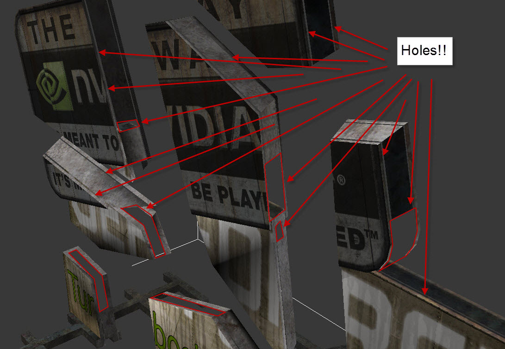
This is also covered in NVIDIA's documentation regarding making your Destructible meshes. Currently, this documentation is only available by downloading PhysXLabs standalone application for free from their website. You can find more details by opening PhysXLab > Help > PhsyXLab Help > How to Prep Your Mesh for Destruction tab. ______________________________________________________________________________________________________________
Why does my mesh fall completely apart when I shoot it? Why can’t I just shoot a hole in my DM? How to stop DM from breaking apart in a single hit?
Make sure that you've setup the mesh to have a proper Support Depth . This is what allows chunks to stick together until they have received enough damage to break free from the other chunks. Also, depending on the amount of damage being applied you may want to increase the Damage Threshold and adjust the Impact Damage values to get a desired result.
If you're creating your destructible in Unreal Engine 4 you'll only be able to set a Support Depth of 1. If you're using PhysXLab you can create up to 5 depths of destruction. ______________________________________________________________________________________________________________
Why doesn’t my DM stick to the ground when I shoot it? It just flys off and bounces around.
You will want to set the flag for Asset Defined Support , with corresponding selected chunks and the Chunk Parameter is Support Chunk set properly, or you can use World Support . When either/both of these are set the destructible will "stick" to any static geometry in your game so long as it has not received enough damage to break free. This also requires that at least a Support Depth of 1 is set to work properly as well.
Destructible Mesh Settings:
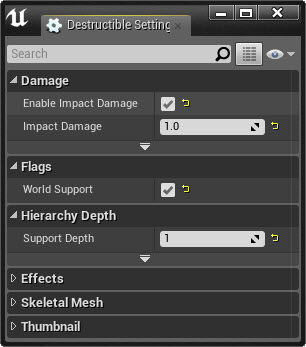
World Support NOT ENABLED
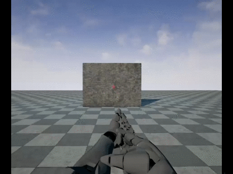
World Support ENABLED
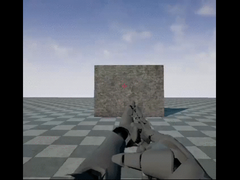 ______________________________________________________________________________________________________________
Why is my DM floating above the ground, or why is collision not matching the mesh? Why doesn’t the collision of my DM match my Static Mesh where I setup my collision?
Unlike the Static Meshes you do NOT have the ability to create custom collision for your destructible assets, at the moment. This may change in the future, but is not currently planned.
When a destructible asset is created there will be two collision sets created, if you're using Unreal Engine 4 to create your DM, but more if you're using more destruction depths from an asset created in PhysXLab. The first collision depth will be a Single Convex Hull that will be around you mesh. The second set of collisions will be for the fracture depth. A Single Convex Hull will be created around each chunks.
These collision hulls may or may not always tightly bound the graphics mesh. Because of this, there can be inconsistencies in what you see with the graphics mesh and the collision mesh in your game. See the images below for more details.
To see the collision representation in your game of your destructible, and all other PhysX collisions you can use the Console Command "PXVIS COLLISION". (See image below)
- PXVIS Collision
-
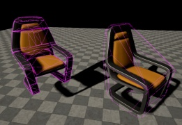
Unfractured
-
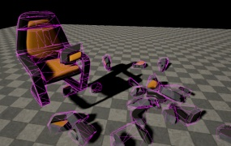
Fractured
-
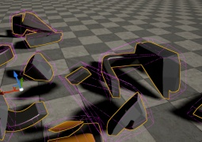
Fractured Non-Uniform Scale
As you'll see in the last image, the collision hull does not match exactly for the chunks that were broken off. This is to be expected since only a single convex hull is generated for each chunk that is created. ______________________________________________________________________________________________________________
Why doesn’t my mesh break when it falls?
Make sure you have Enable Impact Damage in the Destructible Settings panel checked. You will need to have this set and to make sure that you have at least fractured the mesh with a Cell Site Count of 2 or more. ______________________________________________________________________________________________________________
Why is my collision wrong if I scale my DM?
A limitation of destruction meshes is that you cannot scale them non-uniformly. Scaling them in this manner will cause erratic physics simulations and the collision mesh will often not match the graphics mesh. (See images below)
When you scale a destructible mesh make sure that you are scaling evenly on the XYZ axis.
Left: Original Mesh Scales Right: Mesh Scaled on the Y-Axis
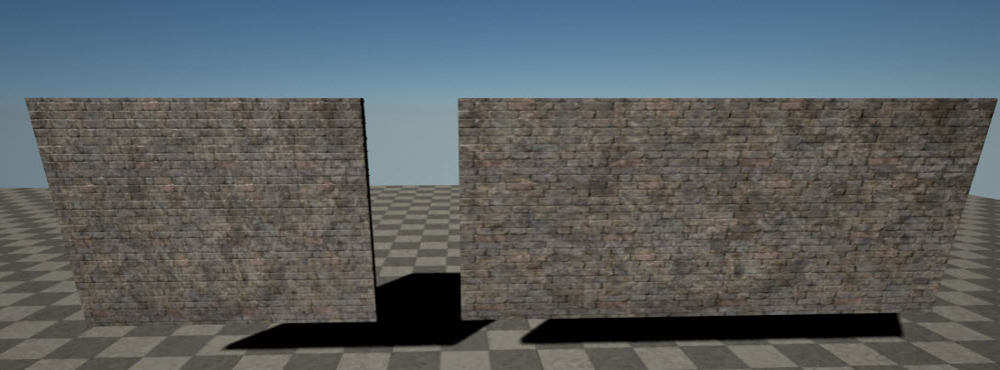
With the non-uniformly scaled mesh the collision and the graphics mesh will often not line up. You can clearly see in this scene using the console command PXVIS COLLISION that this is the case. The collision hulls are not lining up with their graphics mesh. Physics will not act accordingly either.
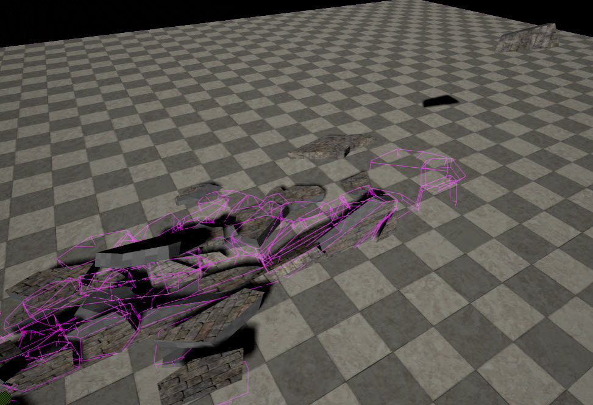 ______________________________________________________________________________________________________________
Why does my projectile mesh not fracture my DM? My bullet (mesh) doesn’t fracture the destructible. What’s wrong?
If you want use a mesh as your collision, you will need to setup the Collision Presets to get this working correctly.
You will want to setup a Custom Collision channel called Projectile in your Project Settings > Collision tab. This should be set like so:
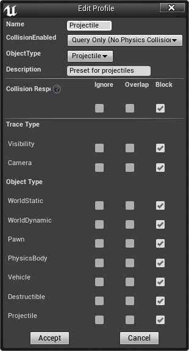
Once you've set this up you can open your projectile BP and set the CollisionComponent's Collision Presets to be the following:
- Collision Preset: Custom
- Collision Enabled: Collision Enabled (Query and Physics)
- Object Type: Projectile
- Destructible: Overlap
Now that you've set up the Projectile BP you will now need to set the Destructible.
Select the Destructible in the scene and in the Details panel locate the Collision Presets and set them to the following:
- Collision Preset: Custom
- Collision Enabled: Collision Enabled (Query and Physics)
- Object Type: Destructible
- Projectile: Overlap
______________________________________________________________________________________________________________
When I fracture my mesh why is there not material applied to the chunks on the inside?
When the mesh is fractured it will create geometry that will represent your interior faces. There are two ways to apply materials to these interior faces on your mesh.
- In the Destructible Mesh Editor > Skeletal Mesh tab > Materials
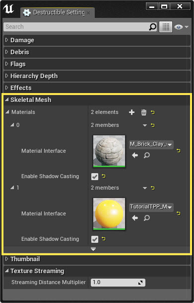
- Select the Destructible in your viewport then assign the material via the Details panel.
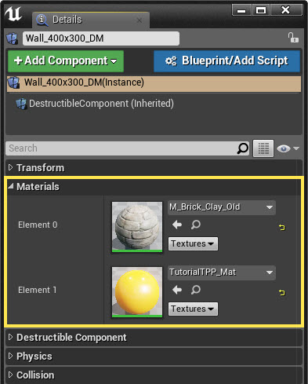 ______________________________________________________________________________________________________________
How do I setup my DM so that it can receive different damage from different weapons and not fracture? How to not receive damage if below a certain amount?
This can be done by adjusting a couple of values in your Destructible meshes Damage settings tab.
Some of the values that you'll want to tweak are here:
- Damage Threshold: This is the maximum amount of damage needed to break a chunk free
- Damage Spread: How easily the damage applied at the hit location can radiate to surrounding chunks.
- (Optional) Impact Damage: How much damage is applied with an impact.
- Damage Cap: Limits the amount of damage a single hit can have.
- Accumulate Damage: If a chunk doesn't receive the full damage amount to break it free it will "remember" what amount of damage has been applied.
By using a combination of the settings above you can control how your DM will be affected by multiple objects. With this type of setup as well, you can now just setup the amount of damage to apply in your weapons to hopefully get a result that fits your needs. ______________________________________________________________________________________________________________
Why are some settings not honored when I simulate Physics on my Destructible?
When using a mesh that is using the option "Simulate Physics" enabled this mesh will not use some settings that are set in the destructible. Settings like World Support or Asset Defined Support would not be used in this instance since the mesh is going to simulate physics since it would not be initially static. Even using the option for Start Awake would not make this setting be honored. ______________________________________________________________________________________________________________
Why doesn’t my DM cast shadows?
This is commonly an issue when bringing in a Destructible mesh that was created using PhysXLab.
Open Destructible Mesh Editor > Skeletal Mesh tab > select a specific material > set Enable Shadow Casting to TRUE(checked).
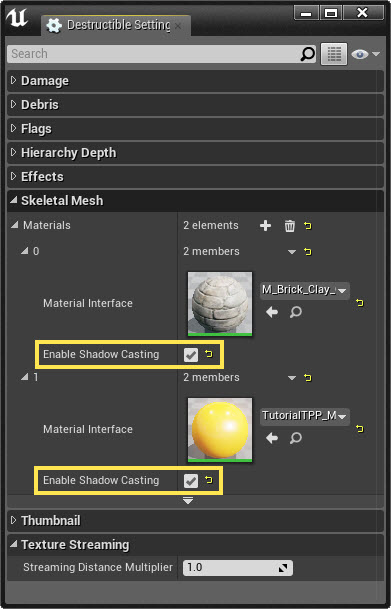
By default, on all destructible meshes created in Unreal Engine 4 this will be enabled by default. For meshes crated in PhysXLab this is not the case. This will need to be enabled by using the settings above.
If you're still not seeing shadows being cast for your destruction mesh you can also try looking at the settings in the Details panel when you select your destructible in your scene.
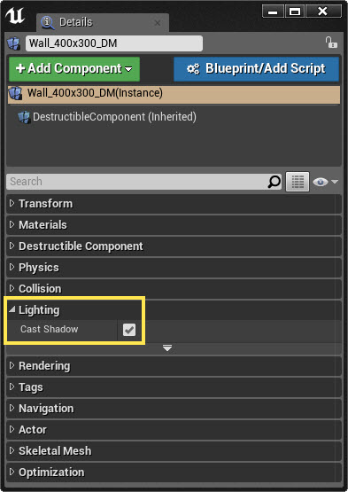
______________________________________________________________________________________________________________
My character is always blocked by the chunks. How can I turn off collision for the DMs or my character?
Depending on how you've got your destructible mesh setup, you can run into problems where your character may be blocked by a small to moderately sized chunks. This can be problematic for gameplay in some instances. To get around this there is an option called Large Chunk Threshold that can be adjusted to prevent just this.
This is a mesh specific setting, meaning that you can only change this for the mesh in the scene viewport and not in the Destruction Mesh Editor's settings.
Select your mesh and in the Details panel look for the option Large Chunk Threshold . By default this will be set to 25. Depending on your mesh you will want to set this to a higher size to prevent larger chunks from impeding the player or any other gameplay. ______________________________________________________________________________________________________________
How do I customize the shapes of the chunks in my DM?
In Unreal Engine 4 you cannot customize specific chunks in this manner. You will need to use NVIDIA's PhysXLab to access their Slice and Cut Out methods to do this.
If you want to try different variations of the default (Voronoi) fracture method in the Destruction Mesh Editor you can adjust the Random Seed value to try different patterns. The benefit of the Random Seed as well is that anytime you want to get that same pattern again you can just enter that number to get the same exact pattern.
-
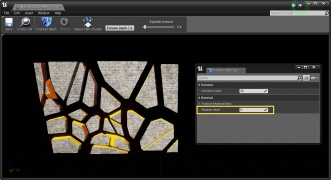
Random Seed: 1
-
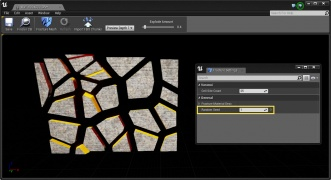
Random Seed: 2
-
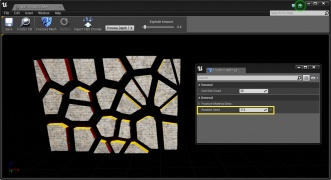
Random Seed: 112
______________________________________________________________________________________________________________
How do I create more than one destruction depth?
Currently, you can only create a single destruction depth in Unreal Engine 4 using the Voronoi fracture method.
In NVIDIA's PhysXLab you can use the Slice or Cut Out method with up to 5 destruction depths. ______________________________________________________________________________________________________________
Can I change my Destructible meshes settings at run-time?
Currently you cannot change any settings in the Destruction Mesh Editor Settings via Blueprints or at run-time. ______________________________________________________________________________________________________________
Can I fracture a mesh at run-time, like fruit ninja?
While this is a feature that we would like to support in the future, it is currently not planned at the moment out of the box. ______________________________________________________________________________________________________________
When using Debris settings all my chunks disappear at the same time?
The chunks that are broken free will be destroyed based on these time variables that are set for Debris Lifetime. The Min and Max values will average between the two times to destroy the chunks. If you're not using at least a Support Depth of 1 all chunks will be broken free at the same time and cause all chunks to be destroyed accordingly. ______________________________________________________________________________________________________________
This will need to be enabled on a per-instance basis. You can select your destructible, then in the Details panel locate the tab for Navigation . Under this tab you will see the option for Affect Navigation . Once this is enabled this will allow your destructible mesh to update the Nav Mesh at runtime.
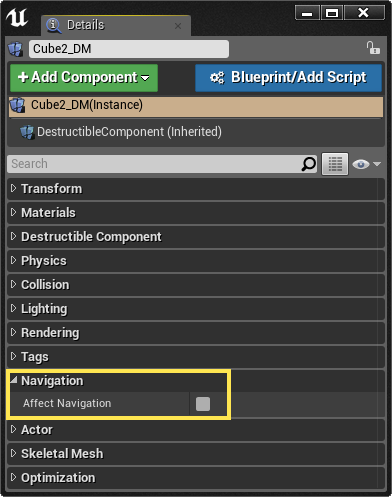 ______________________________________________________________________________________________________________
Mobile: Android/iOS
______________________________________________________________________________________________________________
Why doesn't my destructible mesh work on mobile?
This is currently not support for mobile devices in any form.
Destructible and Cloth assets depends on APEX to work. There are performance reasons that this must be considered when using. This may be supported in the future, but it is not currently planned.
Instead of relying on APEX for destruction it would be better to author pre-fragmented meshes that you can then switch to them to simulate the same type of effect. It will also have a much lighter processor load. ______________________________________________________________________________________________________________
Performance
If I use high speed object why doesn’t it collide with my DM? It just goes right through.
With any game or project that is using real-time simulations you'll probably run into something like this at some point. There is a limitation of how accurate a simulation can be without sacrificing performance for accuracy or accepting that some things will not be as accurate to get better performance.
As an example, if we were to create a mesh to represent the bull of a gun it would be improbable to expect the small bullet mesh to react like the real world. Scale and speed play a big factor in the physics simulation that would happen.
Let's say the bullet is moving at a very high velocity when it is at the point of impact for the destructible. The bullet would simply pass through and not affect our destructible at all.
You can improve physics simulations though, within reason, by going to the Project Settings > Physics > enabling and using Sub-Stepping. For more information see the links below.
https://docs.unrealengine.com/latest/INT/Engine/Physics/Substepping/index.html https://www.unrealengine.com/blog/physics-sub-stepping ______________________________________________________________________________________________________________
Are Destructible assets handled on the CPU or GPU? Why?
NVIDIA's APEX Destruction and Cloth are both handled on the CPU. While this is NVIDIA tech that has been included with the engine, it has to be GPU agnostic so that anyone using the Unreal Engine 4 has access to use them.
There is currently no option in the Out-of-the-Box version of Unreal Engine 4 that allows those with NVIDIA GPU's to load these on the GPU rather than the CPU. ______________________________________________________________________________________________________________
Why do I get lag when I fracture my Destructible?
Using a lot of Destructible assets in your scene will cause this to happen. Even using a few Destructibles with a lot of fracture chunks will cause this to happen. This is because NVIDIA APEX Destruction is handled on the CPU rather than the GPU. Depending on your system specs this can cause a bottle-neck in performance.
When a destructible is fractured, depending on the number of chunks you've chosen to use, these are all simulating physics bodies. If you are simulating a lot of physics objects you are more likely to see these types of performance issues. You can try using fewer destructible assets, reduce the number of fracture chunks for each mesh, or using some of the settings in the Destructible Mesh Editor Settings panel to remove chunks from the scene more quickly to free up the CPU usage.
If you're seeing performance issues that you're not sure you should first start by having a look at how to profile your game for these types of issues. Take a look at the following links for more information and demonstrations of profiling.
Performance and Profiling: https://docs.unrealengine.com/latest/INT/Engine/Performance/index.html
GPU Profiling: https://docs.unrealengine.com/latest/INT/Engine/Performance/GPU/
Support Stream Video "Rendering Best Practices": https://www.youtube.com/watch?v=-csRxRj_zcw ______________________________________________________________________________________________________________
Why do my destructible chunks/pieces disappear if I have a lot of DMs in my scene?
There is a hard-coded value of 2000 chunks that can be present in a scene at a single time. This is done to keep the CPU from being overloaded and killing the FPS completely.
This limit is for all destructible assets in the scene and not specific to each mesh. As an example, if you have 4 meshes with 500 chunks each you have reached the cap of 2000 chunks per scene. Anything over this amount all the chunks would be removed/destroyed immediately.
You can change by adding adding the following to your ConsoleVariables.ini file located in Engine\Config\ConsoleVariables.ini
- p.APEXMaxDestructibleDynamicChunkIslandCount= [enter value (default is 2000)]
- p.APEXMaxDestructibleDynamicChunkCount= [enter value (Default is 2000)]
These values cannot be changed dynamically in the editor and will require a restart of the engine to take effect. Consider these settings for advanced users and with specific design considerations since they will have a significant impact on performance! ______________________________________________________________________________________________________________